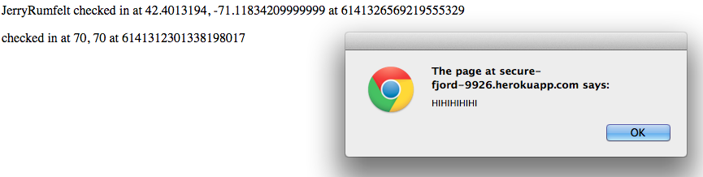
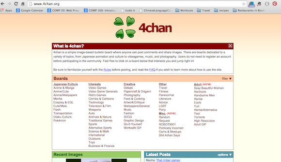
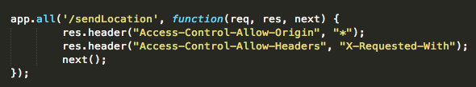
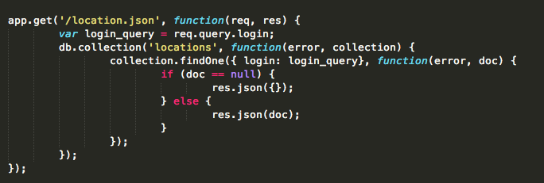

- Location: HTTP POST /sendLocation method
- Severity: HIGH This security issue is due to the server not checking the validity of the input provided by the client before executing it. The client can therefore effectively change the entire webpage by providing JavaScript or HTML as their input.
- Description: This issue was found when testing the /sendLocation command using curl. Any type of information could be POSTed as long as it had the tags: "login", "lat" and "lng". Viewing the source code confirmed this because the error msg is only shown when one of the three variables above are undefined.
- Proof of Vulnerability:
This is the result of using: "curl --data 'login= < img src = http://dailynewsdig.com/wp-content/uploads/2013/05/Cutest-Baby-Animals-top-10-5.jpg alt="dog">&lat=70&lng=70' http://secure-fjord-9926.herokuapp.com/sendLocation"
This is the result of inserting an alert box as the login information
This is the result of inserting a meta tag that redirects the page to: 4chan.org
These examples show the wide range of problems and issues that can arise when the server does not verify the type of information the client is providing before executing it.
- Resolution: This can be resolved fairly easily by not inserting user input into the database if it is not the format expected or desired by the server. Additionally, the input can be parsed character by character to eliminate potentially problematic characters. For example, '<' and '>' can be replaced by greather than or less than symbols so they are not read as tags.
- Location: HTTP POST /sendLocation method
- Severity: HIGH The server has set the Access-Control-Allow-Origin response header to allow all origins to access the contents of the page through the "*". This means requests can be made from any origin and they will be approved.
- Description: This issue was found when viewing the source code for the server. 
- Proof of Vulnerability: Any site can access the information from the server. Therefore if there is private information stored in the database it can be retrieved easily by another site without the server having to give them permission. Once a site has this information they can use it however they wish.
- Resolution: This can be remedied by authenticating the website that is requesting the page through checking their credentials such as their cookies to verify that that origin is approved for making a request.
- Location: HTTP GET /location.json method (the database)
- Severity: MEDIUM An attacker can find information in the db besides whether their query exists. Only one record is returned but the security breach is still significant
- Description: This issue was found when looking at the source code and seeing that the GET method gets the query from the client and then queries the database with the client's input. This means people can query the database for anything and they can even find out what else is in the database, besides what an innocent query may be.
This is the result of inserting a meta tag that redirects the page to: 4chan.org
 - Proof of Vulnerability: One can query the database just by knowing what key the application uses to perform the query.
Using the $ne parameter queries the database for any login not equal to the supplied value (in this case "mchow")

This returns a JSON of one record whose value for the login key does not match the supplied value

This is dangerous because through querying MONGODB an attacker can find out the other data that exists in the database. This is problematic because other people's information and locations can be returned to anyone. In addition, knowing the login value is all the information needed for a client to gain access to all the other information in the db associated with that login. In this case the data returned is not as harmful as it could be (i.e. bank account information) but one's geolocation is still a privacy concern.
- Resolution: Instead of using the exact string the client provides to query the database, the provided string can be parsed to ensure it is just a login value. The client can also require authentication before being able to query the database to ensure only trustworthy people query the database.